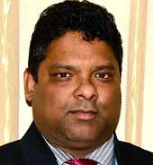
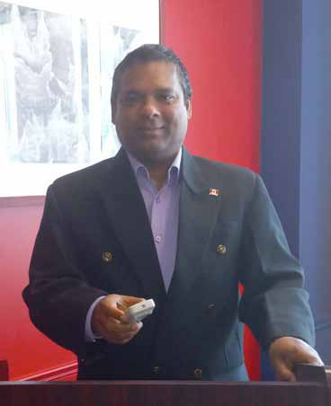
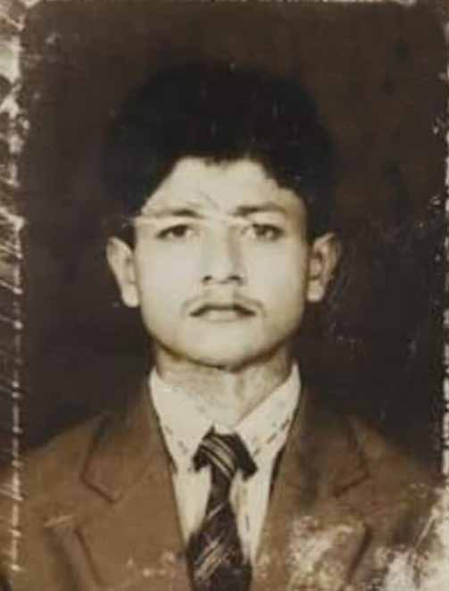
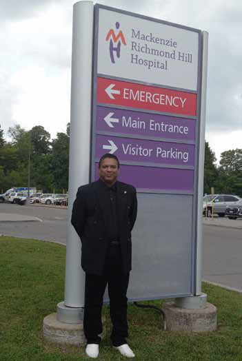
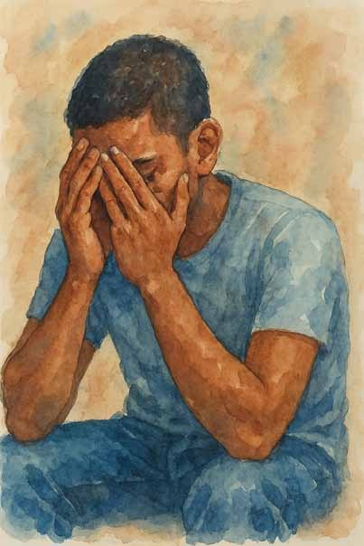

D r. Ruwan M. Jayatunge is a Sri Lankan- born medical doctor and mental health professional whose work has spanned continents and conflict zones. A former commissioned officer in the Sri Lankan Army, he treated soldiers at the Colombo Military Hospital, becoming one of the first in the country to study and document the psychosocial effects of PTSD.
D r. Ruwan M. Jayatunge is a Sri Lankan- born medical doctor and mental health professional whose work has spanned continents and conflict zones. A former commissioned officer in the Sri Lankan Army, he treated soldiers at the Colombo Military Hospital, becoming one of the first in the country to study and document the psychosocial effects of PTSD.
Jaffna Monitor hellojaffnamonitor@gmail.com 42 D r. Ruwan M. Jayatunge is a Sri Lankan- born medical doctor and mental health professional whose work has spanned continents and conflict zones. A former commissioned officer in the Sri Lankan Army, he treated soldiers at the Colombo Military Hospital, becoming one of the first in the country to study and document the psychosocial effects of PTSD. With advanced training in psychiatry, trauma- informed therapy, addiction psychology, and neuropsychology from institutions in Canada, the UK, and the USA—including Harvard and the University of Toronto—Dr. Jayatunge brings a rare blend of field experience and academic insight. He holds a PhD in Psychology and has authored numerous books and peer-reviewed articles in collaboration with global experts, including Prof. Daya Somasundaram and Dr. Neil Fernando. Today, he serves as the Clinical Director of Maple Cerendib Rehab in Canada and supervises internships for the University at Buffalo. A member of the American Psychological Association and the PTED International Scientific Committee, Dr. Jayatunge continues to lecture globally on war trauma, PTSD, and healing. Do you feel the state and public health system adequately responded to the civilian mental health crisis following the war? What, in your opinion, could have been done differently? Unfortunately, the state and public health system failed to adequately address the mental health crisis that emerged from the armed conflict. A significant number of psychological casualties remain—among military personnel, former LTTE members, and civilians alike. Many trauma-related psychological wounds remain unhealed, undiagnosed, and untreated. Our society continues to bear the deep scars of war trauma, which manifest in various forms such as self-harm, social unrest, crime, child abuse, domestic violence, substance addiction, and political violence. These are not isolated issues—they are symptoms of a society grappling with unresolved psychological pain. We are living in a traumatized society that urgently needs healing, structured psychosocial support, and genuine reconciliation. Is there sufficient mental health support for trauma victims today in government hospitals and public clinics in conflict-affected areas? There is a prevailing notion among authorities BY: Our Special Correspondent Dr. Ruwan M. Jayatunge

Jaffna Monitor hellojaffnamonitor@gmail.com 43 that the armed conflict ended in 2009, and therefore, there is no longer a need to address war-related issues. This mindset has led to a convenient forgetting of the psychological and social consequences of the war. However, the reality is quite different. We are still not providing adequate support or treatment for war victims. The trauma of war continues to echo across Sri Lankan society. The conflict has become embedded in our collective social experience and memory. Many of the social problems we face today—whether directly or indirectly— are rooted in unresolved war trauma. Based on your experience in trauma psychology, how deep and widespread is untreated combat trauma among Sri Lankan soldiers after 2009? The very first study on Post-Traumatic Stress Disorder (PTSD) among Sri Lankan combatants was conducted by Dr. Neil Fernando, Consultant Psychiatrist to the Sri Lanka Army, and myself. Between 2002 and 2006, we clinically interviewed 824 soldiers who had been referred to the psychiatric unit of the military hospital, using the DSM-IV criteria. From this group, we identified 56 individuals with full-blown PTSD. However, it's crucial to note that our sample was not randomly selected. These were not ordinary troops but individuals who had already exhibited psychological red flags— such as symptoms of depression, sudden behavioral changes, disciplinary issues, or psychosomatic complaints. They had been referred specifically for psychiatric evaluation, meaning our study did not capture the broader prevalence of PTSD among the military. In reality, we believe the incidence of PTSD among soldiers rose significantly by 2009, and likely escalated further after the war ended. A substantial number of combatants continue to suffer from war-induced psychological distress—many of them undiagnosed, untreated, and enduring their pain in silence. Delayed PTSD is a well-documented phenomenon, and it remains a critical concern in post-conflict settings like Sri Lanka. Throughout the war, soldiers were repeatedly exposed to severe psychological trauma. Most acute stress reactions went unnoticed or unaddressed. Emotional overwhelm was common, yet there was no robust system in place to detect trauma early or provide psychological first aid. Many soldiers continued to operate in high-stress combat zones, quietly carrying the burden of invisible wounds. For some, the diagnosis of PTSD came only years later. A particularly stark indicator of this mental health crisis emerged in the immediate aftermath of the war. Between 2009 and 2012, the military spokesman confirmed that nearly 400 soldiers had died by suicide. This staggering figure offers just a glimpse into the depth and scale of psychological trauma borne by our servicemen. Even today, we hear of ex-servicemen involved in violent crimes or social disturbances. These visible cases are only the tip of the iceberg. Beneath them lies a vast, largely hidden crisis of unaddressed psychological trauma among Sri Lanka’s war veterans. In what ways does unresolved trauma among ex-soldiers manifest in civilian life—particularly in terms of violence, substance abuse, or erratic behavior? It is like a time bomb—it may remain hidden for years, but it can explode unexpectedly,
Jaffna Monitor hellojaffnamonitor@gmail.com 44 harming not only the ex-combatant but also their family members and others around them. These deep, untreated mental wounds don’t always stay buried. They often resurface in various ways—sometimes as aggression, either turned inward as self-harm or outward toward others. Family and relationship problems are common. Many struggle to reintegrate into society, often feeling alienated or emotionally distant. They may turn to addictive behaviors to cope, while also avoiding people, situations, or even memories that trigger their pain. Occupational challenges are frequent, as are distorted beliefs about themselves and the world around them. Alarmingly, some begin to distrust the very systems designed to support them—including healthcare providers and therapists. There’s also a recurring sense of being re- victimized, accompanied by an overwhelming need to constantly protect themselves. In some cases, this leads to attempts to control or even victimize others. On a deeper level, many lose their core beliefs, and their inner sense of identity. They grapple with intense emotions—rage, despair, guilt, shame, and deep self-loathing—yet find it hard to express what they’re going through. Some even suffer from alexithymia, the inability to describe their feelings in words. Have you encountered signs of institutional or collective denial in addressing the psychological impact on Sri Lankan soldiers? Why do you think this remains under-addressed? For a number of years, the Sri Lankan authorities were reluctant to believe that combat-related PTSD was emerging in the military. PTSD was regarded as an American illness, and there was an unofficial taboo to use the term PTSD. The tension of combat trauma was mounting in the military over the years, and there had been suicides and self-harms reported from the battlefields. The soldiers affected by war trauma had behavioral problems, and their productivity was plummeting. Many soldiers who had positive features of combat-related PTSD without any physical wounds were compelled to serve in the operational areas and engage in active combat. They were psychologically wounded soldiers with severe avoidance. In the early days of the war, soldiers were sometimes charged with malingering when they tried to seek medical attention. Because of this Many traumatized veterans deserted the army or joined underworld criminal gangs. Throughout the war, the Army had no military psychologists and had no full-time psychiatrist until 2007. Major concern was placed on physical wounds, and psychological wounds were not taken seriously. These factors caused a higher number of psychological casualties in the military.

Jaffna Monitor hellojaffnamonitor@gmail.com 45 In an interview with Jaffna Monitor, former Army Major General Lakshman David stated that the military should have been rehabilitated just like surrendered LTTE cadres. What is your view on this? Why do you think successive governments failed to initiate meaningful rehabilitation for military personnel? There was no effective psychological debriefing system in place following traumatic military operations. Likewise, there was no proper screening process for combat trauma. As a result, many military personnel who experienced severe psychological stress went without the support they desperately needed. These individuals left the military undiagnosed and untreated, carrying the weight of their emotional wounds into their homes and families. Sri Lanka lacked a structured system to support the transition of veterans back into civilian life. This absence created significant readjustment difficulties for former combatants, many of whom struggled to reintegrate into society. They faced a wide range of emotional and social challenges as they attempted to rebuild their lives outside the military. It’s important to recognize that the impact of combat stress does not always surface immediately. In the postwar era, delayed reactions to trauma are common, and symptoms of Post-Traumatic Stress Disorder (PTSD) can emerge long after the initial exposure. For some veterans, these residual effects can become serious, long-term mental health issues, often developing years after their service has ended. We’ve seen a rise in violent incidents involving former soldiers, including recent shootings. Do you believe there is a direct link between these acts and unresolved combat trauma — such as PTSD, moral injury, or other complex psychological conditions? Some traumatized individuals experience a compulsive urge to re-expose themselves to situations that resemble their original trauma—this phenomenon is known as “compulsive exposure.” It is a distinctive marker of combat-related Post-Traumatic Stress Disorder (PTSD). Soldiers suffering from war trauma may later become involved in violence or criminal behavior. This pattern has been observed in various post-conflict societies, including the period following the Vietnam War. When combat trauma goes untreated, it can become a vicious cycle, increasing the risk that affected ex-soldiers will engage in acts of social violence and criminality. One example from Sri Lanka is Malavi Kankanamage Jinasena, also known as "Army Jiné." A former Commando with exceptional combat skills, Jiné served in the elite Sri Lanka Army unit. However, as a result of intense combat stress, his behavior deteriorated. He was eventually charged with multiple disciplinary violations and went AWOL (Absent Without Leave). While living in hiding, Jiné used his military survival training to evade law enforcement and sustain a life of crime. He was implicated in numerous violent acts, including highway robberies, murders, and sexual assaults. According to some reports, he was responsible
Jaffna Monitor hellojaffnamonitor@gmail.com 46 for as many as 27 rapes. Jiné lived deep in the jungle for years before he was finally tracked down and killed by police. Does Sri Lanka have the institutional capacity to track or support army deserters today? Or has the country created a “lost generation” of men trained for war but denied reintegration or care? I think we have the institutional capacity to track or support army deserters. It can be done with knowledgeable professionals and officers with empathy. These army deserters have postwar war readjustment problems and are experiencing issues with their living, working, and social environments. They need individual therapy, family therapy, and psychosocial rehabilitation. Do you think stigma within the military — especially around admitting emotional vulnerability — has worsened the psychological toll on soldiers? How can this barrier be broken? Indeed. War trauma is often associated with stigma, and some individuals with combat trauma were reluctant to come for psychological services. They feared it would affect their dignity and military career. We have detected PTSD reactions among the senior military officers, and yet they did not seek professional support. Some of them were compelled to come for treatment when these stresses became unbearable and when their lives were at risk. Has the state, in your opinion, failed its own armed forces by not providing adequate postwar rehabilitation and reintegration support? I would say that, as a nation, we failed to provide adequate post-war rehabilitation and reintegration support to the soldiers who fought in the 30-year armed conflict. If you were advising the Sri Lankan state today, what would be the most urgent steps to prevent future violence from traumatized ex-soldiers and to reintegrate them constructively into society? I would restructure the Rehabilitation Department and recruit knowledgeable and empathetic professionals to work with war-affected individuals. It is essential to train personnel from both the military and health sectors, equipping them with a Army Jiné

Jaffna Monitor hellojaffnamonitor@gmail.com 47 deep understanding of war trauma and its psychological and social consequences. We need to provide specialized training for those working in the military’s psychological and psychiatric units. This should include identifying early signs of combat trauma in soldiers, preventing issues such as desertion or criminal behavior, and improving the recruitment process by selecting psychologically stable individuals for military service. It is equally important to introduce modern and effective psychotherapeutic approaches to support war-affected combatants and their families. Furthermore, we can utilize the existing network of MOH (Medical Officer of Health) divisions to extend these services islandwide. All ex-combatants—including former LTTE members—should undergo regular psychological screening to assess their mental well-being. We must also establish comprehensive reintegration programs for soldiers leaving the military and returning to civilian life. At present, there is a serious gap in these areas, and Sri Lankan society is already suffering the consequences. We cannot afford to let this situation persist. You’ve worked in countries like Canada and the U.S., where veteran support systems are more developed. What models or practices from those systems could be meaningfully adapted to Sri Lanka’s post-war context? From the very beginning, we reported on the war—but we never truly studied it. We failed to examine the armed conflict through clinical, psychological, and sociological lenses. Regretfully, Sri Lankan universities made little effort to conduct in-depth research on the 30- year war and its psychological and sociological impacts. Ironically, it was foreign universities that carried out substantial studies on the Sri Lankan conflict and learned a great deal from it. Over the past three decades, we were unable to train professionals capable of addressing the psychological wounds left by the war. Sadly, the average medical officer still lacks an understanding of combat-related PTSD and how it affects both physical and mental health. These are bitter truths we must confront. Another pressing issue is that many decision- makers lack insight into war trauma and its devastating consequences. Their knowledge of the psychological impact of war is minimal at best. Some authorities are difficult to

Jaffna Monitor hellojaffnamonitor@gmail.com 48 convince—they remain insulated in their comfortable offices, detached from the realities on the ground. Professional jealousy and insecurity further cloud their judgment and obstruct sound decision-making. These negative factors have caused immense social harm and delayed the treatment of war trauma in Sri Lanka. In contrast, the United States and Canada have developed highly effective systems for treating combat trauma. In these countries, trained professionals with relevant knowledge, experience, and skills handle the work. They continuously study war trauma, publish research, and develop evidence-based therapeutic methods to support those affected. Importantly, their work is free from political interference. Mental health services in these countries are geared toward treating both active-duty personnel and veterans. I have visited several Veterans Administration (VA) hospitals in Kansas and Philadelphia, where both serving soldiers and ex-servicemen receive care. These institutions excel at identifying combat-related psychological symptoms and providing appropriate treatment. There is much we can learn from them— not only from their successes but also from the mistakes made during the Vietnam War era. Speaking to a Northern audience — many of whom were both victims and witnesses to combat trauma — how would you explain the psychological impact of carrying such complex, unresolved experiences? The people in the North, who were exposed to combat trauma, were among the collateral victims of the armed conflict. They endured pressure from both the government forces and the LTTE. Many became war casualties, suffered material losses and displacement, and had their children forcibly conscripted by the LTTE. Civilians in the North witnessed the true horrors of war. Many were forced to flee the country, while others became trapped within the war zone. Numerous individuals lost family members; some went missing. To this day, many victims continue to live with distressing memories of their traumatic past. War-related trauma continues to affect the

Jaffna Monitor hellojaffnamonitor@gmail.com 49 population in the North. There is a visible loss of motivation, widespread alcohol and substance abuse, domestic violence, cynicism, and a deeply pessimistic outlook on the future. Many feel a sense of a foreshortened future— believing their lives will be cut short or lack meaning. At times, these unresolved traumas manifest as social violence. For instance, in the immediate aftermath of the war, the emergence and violent activities of the Aava Gang in the North served as a stark indicator of the psychosocial consequences of the three- decade-long conflict. These are signs of deeply unhealed wounds. If not addressed through effective and sustained interventions, the impact of this trauma could carry forward to future generations. What kind of trauma-informed justice or healing frameworks does Sri Lanka urgently need to address the psychological wounds of both victims and perpetrators of war-related violence? I believe we need a Truth and Reconciliation Commission, similar to the one in South Africa, where affected individuals can come forward to share their stories, find catharsis, and receive empathy and validation. There is little point in chasing down the perpetrators because, in some way or another, we all share a portion of the responsibility. What our society needs is healing—not revenge or recrimination. We cannot allow this conflict to pass on to yet another generation. It is high time we act responsibly and with wisdom. I would like to share the words of an army officer who served during the final phase of the war. His reflections offer profound insight: “I have lived with this war for many years. I’ve seen fallen soldiers and dead LTTE cadres— each one a child of this land. The final days of the war were traumatic. I witnessed immense human suffering. I have seen enough blood. Those who glorify war from the safety of Colombo should have been there. Then they would truly understand what war means. I felt deep sorrow for the Tamil civilians who were led by a noxious mirage. When I first visited the North as a schoolboy at the age of 16, I was moved by the warmth and kindness of the Tamil people. The people of Jaffna were cultured and educated. They belonged to a great civilization rooted in non-violence. But when the conflict erupted in the early 1970s, everything changed. I had to return to the North, this time in combat gear. The Tamil people in the North paid an enormous price for the war. Their homes and livelihoods were destroyed. Their children were forcibly recruited. They faced death, poverty, and displacement. What happened to the millions of dollars sent by NGOs and the Tamil diaspora to support the North? The people of Wanni lacked even basic infrastructure. Malnourishment was rampant. Had those funds been used effectively, the North could have become a little Singapore. I’m relieved that the war is over. Now we must focus on rebuilding the North and fostering ethnic harmony. We must rise above petty racial divisions and work toward peace with our Tamil brothers. If we fail, I fear that within 20 years, we may witness another bloody conflict.”